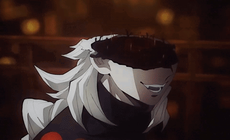
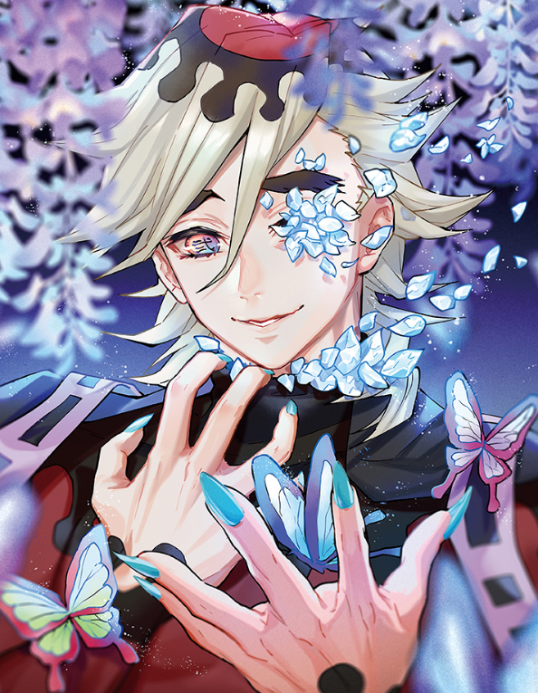

Doma
História
Habilidades
Douma, como demonstrado na obra, foi um personagem extremamente forte e capaz, o qual atingiu o
cargo de Lua Superior Dois. O intérprete era dono de uma incrível agilidade, além de ser capaz
de usar algumas técnicas especiais. Sua força extrema, e quando usada com seriedade, foi capaz
de dar um fim a pilar dos Insetos, Kochou Shinobu. De acordo com Douma, seu poder é tanto que,
em uma luta séria com a Lua Superior Três, ele sairia vitorioso sem nenhum suor na testa. O
demônio foi considerado a terceira besta mais poderosa de Kimetsu no Yaiba, perdendo apenas para
a Lua Superior Um e Kibutsuji Muzan. Sobre suas habilidades mais notórias, eis algumas:
Absorão
Douma desenvolveu uma habilidade capaz de absorver com facilidade grandes massas de carne sem precisar comê-las, como mostrado quando o intérprete engoliu todo o corpo de Shinobu sem ao menos a tocar um dente. Após absorvê-la, Douma conseguiu incorporar seu corpo ao dela em questão de segundos, matando-a.
Regeneração
Douma possuía uma regeneração extremamente rápida, uma vez que qualquer dano causado em seu corpo, em poucos minutos, não passava de lembrança. Tal fato levou o intérprete a viver se auto machucando por simples prazer. Mesmo quando Akaza, Lua Superior Três, feriu-o a cabeça, cortando quase metade de seu crânio, o demônio se regenerou facilmente, levando-o a, inclusive, chegar a considerar o oni um amigo. Outro exemplo de sua incrível regeneração foi a batalha contra Shinobu, visto que foi capaz de superar facilmente os venenos da moça e criar anticorpos para que a droga não o afetasse mais. Após derrotá-la e ter mais de 37 kg — algo o qual é 70 vezes mais letal que os outros — de veneno em seu corpo, ele demorou vários minutos para ser afetado, mostrando como seu corpo é forte.
Tecnica
Todas as técnicas de Douma eram incrivelmente poderosas, uma vez que o demônio usava de seu próprio sangue para, em sua maioria, criar gelo e geada como principais ataques. Apesar de não parecer, as técnicas eram incrivelmente precisas, visto que algumas são capazes de deixar o oponente cego, caso entre em contato com a geada produzida pelos leques do personagem. Ele era capaz de criar algumas flores de lótus as quais conseguem atacar e prender o adversário; também conseguia fazer rajadas de vento frio que, caso inaladas, podiam destruir por completo seus pulmões; lanças e estacas para atacar o inimigo caso esteja longe, e uma técnica que gosto muito é a habilidade de Douma ao criar miniaturas de si mesmo para atacar seus adversários, clones os quais se mostravam bastante eficientes. Todas as habilidades de Douma se baseavam no uso do gelo, geada ou algum vento frio, e, sem dúvidas, um de seus poderes mais fortes é uma grande estátua a qual é capaz de criar fortes rajadas de vento ou até mesmo congelar o oponente até a morte.
